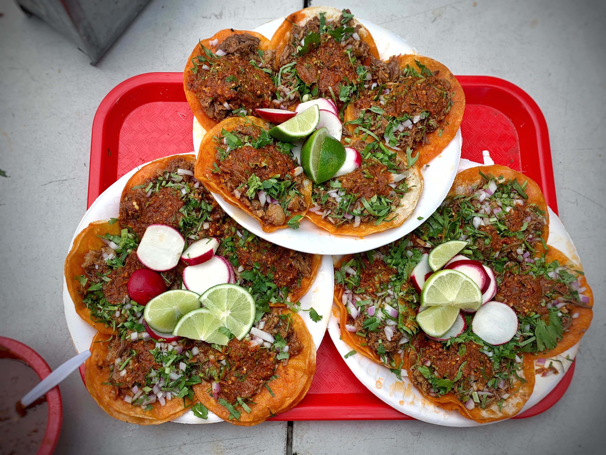

Birria Tacos Recipe
Back to Caleb Recipes

Description
Birria Tacos are a traditional Mexican dish made with slow-cooked beef, flavorful spices, and served with a rich consommé for dipping.
Ingredients
- 2 pounds of beef chuck roast
- 4 dried guajillo chilies
- 2 dried ancho chilies
- 1 onion, chopped
- 4 cloves of garlic, minced
- 1 teaspoon of cumin
- 1 teaspoon of dried oregano
- 1/2 teaspoon of ground cinnamon
- 4 cups of beef broth
- Salt and pepper to taste
Steps
- Remove the stems and seeds from the dried chilies and soak them in hot water for 15 minutes.
- In a blender, combine the soaked chilies, onion, garlic, cumin, oregano, cinnamon, and a pinch of salt. Blend until smooth.
- Season the beef chuck roast with salt and pepper. In a large pot or Dutch oven, sear the beef on all sides until browned.
- Pour the chili sauce over the beef and add the beef broth. Bring to a boil, then reduce the heat to low and cover. Simmer for 3-4 hours, or until the beef is tender and easily shreds with a fork.
- Remove the beef from the pot and shred it using two forks. Return the shredded beef to the pot and stir to combine with the sauce.
- To assemble the tacos, heat corn tortillas on a skillet or griddle. Fill each tortilla with the shredded beef and top with your favorite toppings such as chopped onions, cilantro, and a squeeze of lime.
- Serve the tacos with a side of the rich consommé for dipping.